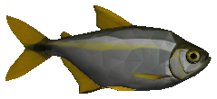
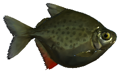
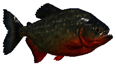
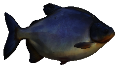
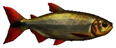
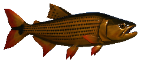
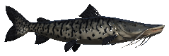
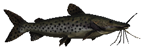
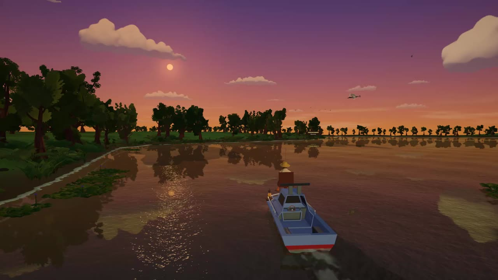

01
Rio Cuiabá
Santo Antônio de Leverger
- Marco
- Morro de Santo Antônio
- Barco
- Barco de madeira
- Espécies
- LambariPacu-pevaPiranha
Rio Cuiabá · Rio Mutum · Rio Paraguai

Jogo de pesca nos rios de Mato Grosso, feito em Santo Antônio de Leverger.
Versão 1.0.62 · em desenvolvimento · não pede conta nem internet
O jogo
Você começa no Rio Cuiabá com vara básica e minhoca a 1 m. Vende o que pesca na vila, troca o barco de madeira pelo bote com motor e depois pela lancha, e segue para o Rio Mutum, em Barão de Melgaço, e para o Rio Paraguai, em Cáceres.
Registre as oito espécies nos três rios no caderno do barqueiro. O último título do jogo é Guardião do Pantanal.
Uma pescaria
Escolha a isca e a profundidade, segure para dar força e solte. Minhoca, milho, massa, plug, isca de peixe ou lambari vivo.
Hora, isca e profundidade decidem o que morde. O pacu come de manhã; a cachara sai ao anoitecer. O caderno mostra onde e como procurar cada espécie.
Cada peixe briga de um jeito. O dourado arranca e salta, a piraputanga pede puxadas alternadas, a piranha segue um ritmo e o pintado precisa ser guiado pelo corredor.
Cinco poses para a foto da captura. Depois, guarde o peixe no barco ou devolva ao rio: soltar também conta no caderno.
Venda o que pescou na vila. O bote com motor custa R$ 600 e a lancha, R$ 1.200; cada barco novo leva mais peixe e abre a viagem para outro rio.
Três destinos
Cada destino é uma versão estilizada do lugar real. O barco novo libera a viagem para o rio seguinte.
Santo Antônio de Leverger
Barão de Melgaço
Cáceres
Caderno do barqueiro








Lambari vivo também serve de isca para piranha, dourado, cachara e pintado. Hora e profundidade de quando cada peixe está mais ativo no jogo.
Imagens do jogo
Imagens gravadas no jogo

Grátis para Windows e Linux
Versão jogável em desenvolvimento, para demonstração. Não pede conta nem internet para jogar.
c24b6730ec56610308b60da034c2a035fc3d5851eee5671fe101187a62c5c257
Para conferir no PowerShell, na pasta do download:
Get-FileHash DE-RIO-EM-RIO-Windows-v1.0.62.zip
Linux x86_64 · TAR.GZ · 324 MB
Extraia o pacote, abra um terminal na pasta extraída e execute:
./Iniciar.sh
Requer driver de vídeo com Vulkan ou OpenGL 3.2. Se precisar, use ./Iniciar.sh -force-glcore.
Build experimental. Teste automatizado aprovado no Ubuntu 26.04 via WSL/OpenGL. Teste em Linux nativo ainda pendente.
Checksum SHA-256 do LinuxA versão 1.0.62 reduz o peso dos presets Mínimo e Baixo. Médio, Alto e Ultra preservam a qualidade anterior. Modo Feira: três pontos de demonstração, ranking diário e o maior peixe em 3D, com nome, peso e comprimento. FSR 2 disponível no Windows; no Linux, sem o plugin, usa SMAA. Inclui FSR 3.1.
Release e checksum no GitHubNão abra o jogo direto de dentro do ZIP. O executável não tem assinatura digital: se o Windows mostrar um aviso, confira se baixou desta página e o SHA-256 antes de executar.